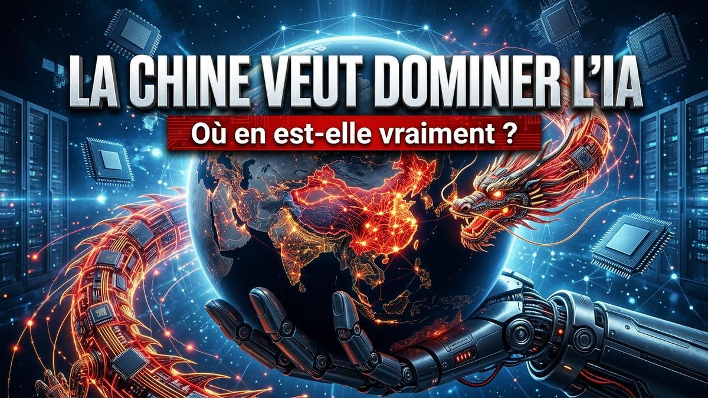

La Chine veut dominer l’IA mondiale : où en est-elle vraiment ?

Un modèle d’IA à poids ouverts est un modèle dont les paramètres sont publiés : n’importe qui peut le télécharger, l’utiliser et l’adapter, souvent gratuitement, sans passer par le service de l’entreprise qui l’a créé.
En janvier 2025, un petit laboratoire chinois, DeepSeek, fait trembler la Silicon Valley. Depuis, la secousse est devenue un séisme. La Chine veut-elle vraiment dominer l’IA mondiale ? Et où en est-elle aujourd’hui ?
Sommaire
Une ambition annoncée depuis 2017
Le « Plan de développement de l’IA de nouvelle génération », publié par le Conseil d’État chinois en 2017, affiche l’objectif d’atteindre un niveau de pointe mondial d’ici 2030 et de faire de la Chine le premier centre d’innovation en IA. Le plan encourage aussi la création de plateformes ouvertes.
La stratégie de l’open source
Plutôt que de verrouiller ses modèles, la Chine joue la carte des « poids ouverts ». Voici les jalons récents :
| Modèle | Éditeur | À retenir |
|---|---|---|
| DeepSeek V4 Pro (avril 2026) | DeepSeek | 1 600 milliards de paramètres, licence MIT |
| Kimi K3 (juillet 2026) | Moonshot AI | 2 800 milliards de paramètres |
| Qwen 3.8 | Alibaba | Famille de modèles très téléchargée |
| Kimi K3.1 Pro (23 octobre) | Moonshot AI | Annoncé le 23 octobre ; poids disponibles sur Hugging Face depuis début novembre (licence propre) |
| DeepSeek V4.1 Flash (17 octobre) | DeepSeek | 552 milliards de paramètres dont 16 milliards actifs, licence MIT |
Selon une analyse, les modèles ouverts chinois (Qwen, DeepSeek, Kimi) pèsent environ 30 % de l’usage mondial de l’IA open source, contre moins de 2 % fin 2024.
Les téléchargements explosent
Les modèles chinois comme Qwen et DeepSeek dominent désormais les classements de téléchargements sur Hugging Face, avec des dizaines de milliers de modèles dérivés créés par la communauté. Pour un développeur du monde entier, c’est un accès gratuit à des outils de très haut niveau.
La bataille des puces
Les restrictions américaines sur les puces avancées compliquent la tâche chinoise. Pourtant, des modèles comme GLM-5 ont été entraînés sur des puces Huawei Ascend, et Huawei soutient DeepSeek V4 avec ses clusters Ascend. La Chine cherche ainsi à bâtir une chaîne d’IA autonome, des puces aux modèles.
La diplomatie de l’IA
En juillet 2026, la Chine a lancé l’organisation WAICO, un cadre de gouvernance de l’IA réunissant 29 pays. Le 16 octobre, les ministères du Commerce et de la Science ont proposé des restrictions d’exportation sur certains modèles avancés, tout en exemptant les poids déjà publiés.
Les limites
- Dépendance aux puces de pointe.
- Censure intégrée à certains modèles.
- Questions sur la protection des données et réglementation grandissante.
- Les meilleurs modèles fermés américains restent en tête sur de nombreux classements.
Domination ou rattrapage ?
La Chine domine déjà un segment : l’open source à bas coût. Pour les modèles les plus avancés, la course reste serrée avec les États-Unis. Plutôt qu’un vainqueur unique, on s’oriente vers un monde de l’IA multipolaire.
Des outils puissants et peu chers deviennent accessibles, mais vérifiez toujours où vont vos données avant de les confier à une IA.
Ce secteur évolue très vite : vérifiez les informations les plus récentes avant de vous appuyer sur ces chiffres.
En résumé
La Chine mise sur l’ouverture de ses modèles pour gagner du terrain : elle domine déjà l’open source à bas coût, progresse sur les puces grâce à Huawei et structure sa diplomatie de l’IA. Sur les modèles les plus avancés, les États-Unis gardent une longueur d’avance. Le résultat : un monde multipolaire, et des outils plus accessibles pour tous.
Quiz : testez vos connaissances
FAQ
La Chine domine-t-elle l’IA mondiale ?
Pas encore globalement. Elle domine l’open source à bas coût, mais les meilleurs modèles fermés américains restent en tête sur de nombreux tests.
Les modèles chinois sont-ils gratuits ?
Beaucoup sont publiés avec des poids ouverts, parfois sous licence très permissive comme la licence MIT. Vérifiez la licence de chaque modèle.
Peut-on utiliser ces modèles en toute sécurité ?
Vérifiez où vos données sont envoyées et traitées. Pour des données sensibles, privilégiez un déploiement sur vos propres serveurs ou un service dont vous connaissez les règles.
Les restrictions américaines bloquent-elles la Chine ?
Elles compliquent l’accès aux puces de pointe, mais la Chine développe ses propres alternatives, notamment avec Huawei Ascend.
À lire aussi
- Claude contre ChatGPT : le duel qui divise les créateurs de contenu
- Claude Opus 5.5, GPT-6.1 Sol, Gemini 4 Argon : comment les essayer gratuitement
- Gemini 4 Argon : vraiment à la hauteur du buzz ?
Vous avez aimé cet article ?
Partagez-le avec quelqu'un qui en a besoin, et découvrez le reste du blog pour aller plus loin.